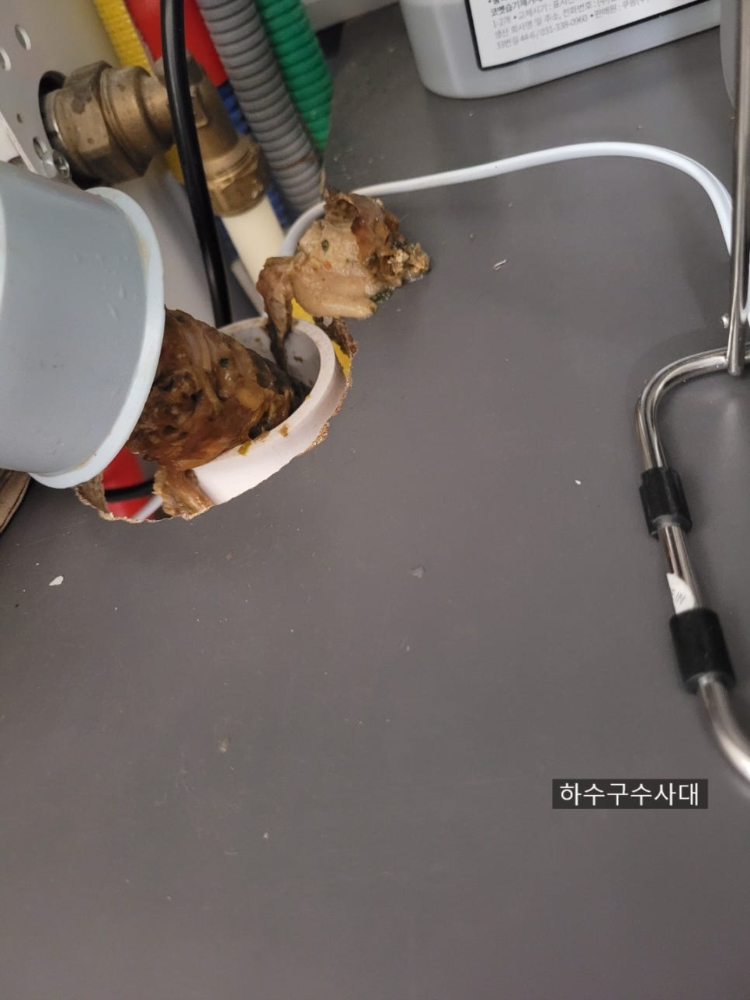
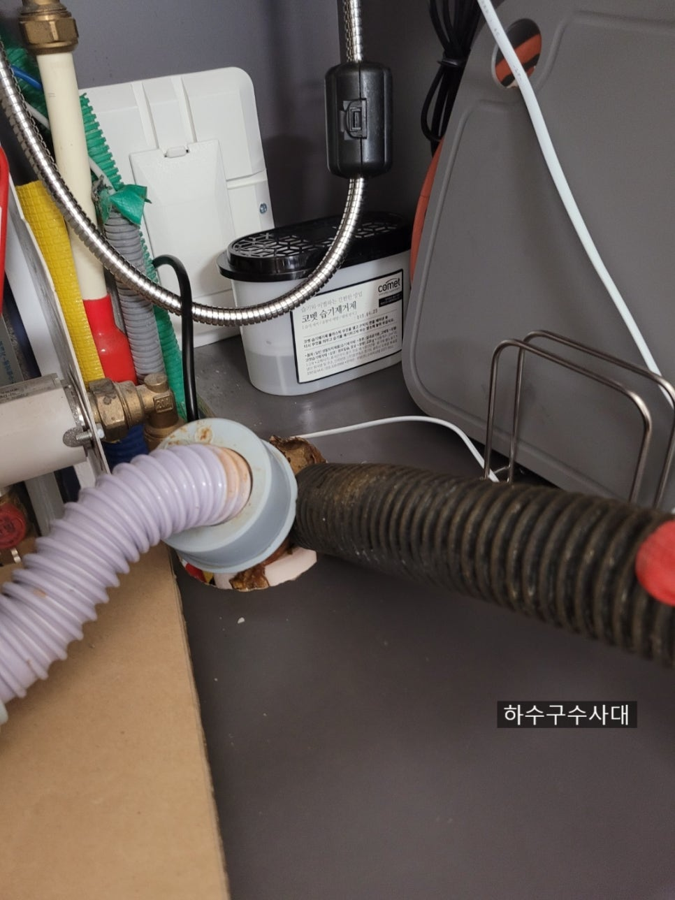
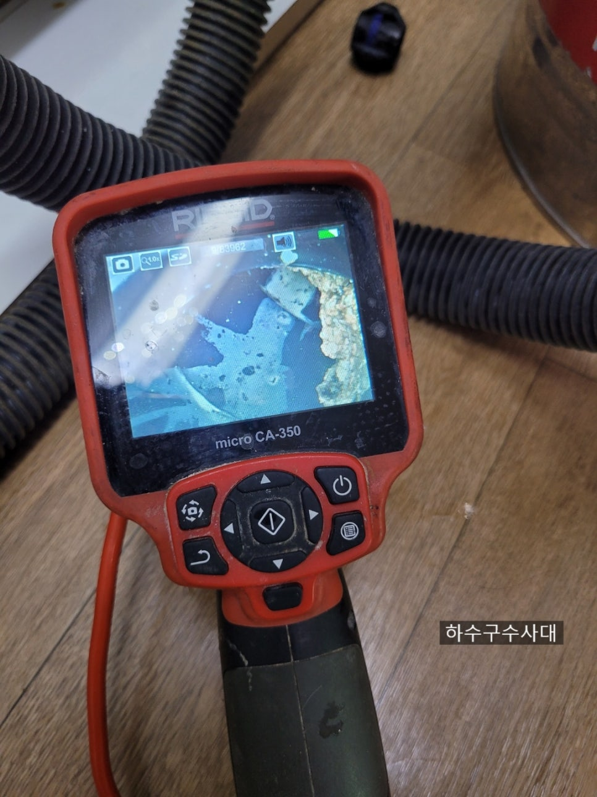
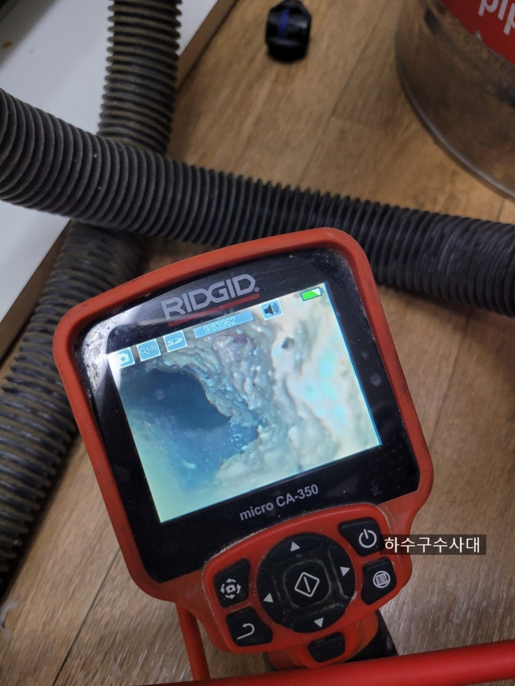
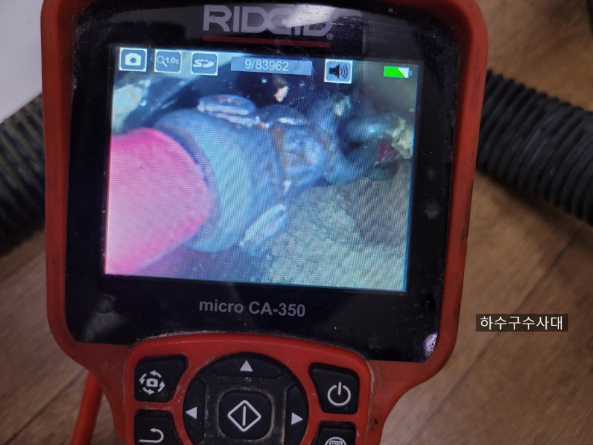
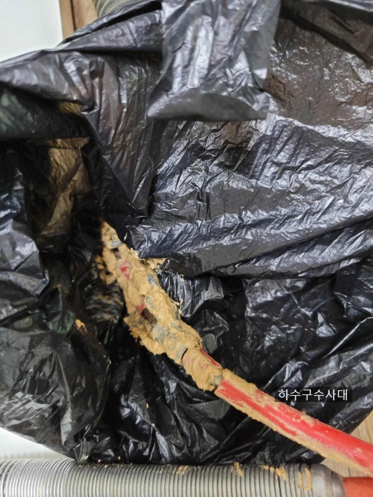
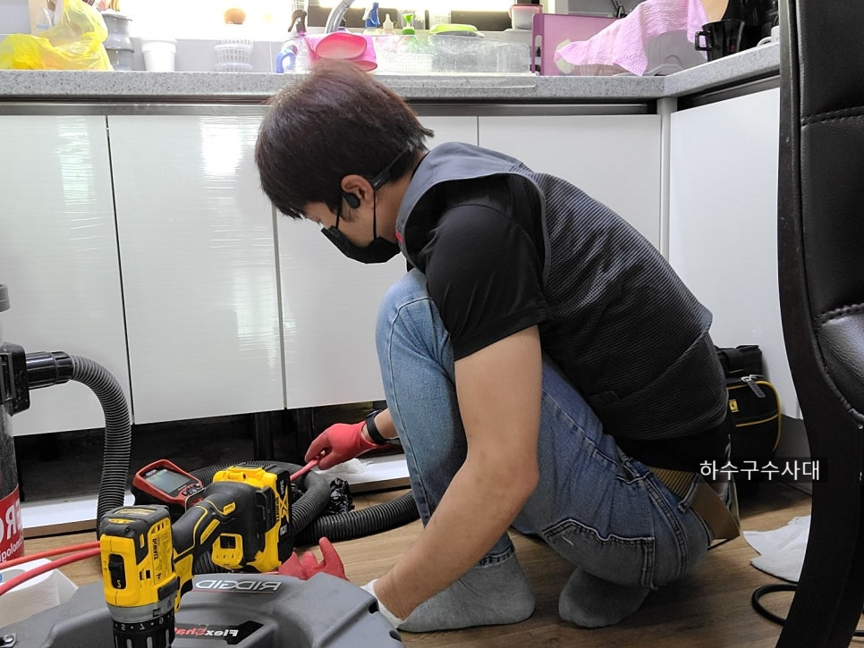

🏠 싱크대막힘해결 하수구막힘해결
용인 싱크대막힘 전문 시공 후기

📋 작업 개요
- 위치: 용인
- 서비스 유형: 싱크대막힘, 하수구막힘, 배관막힘, 누수수리, 뚫는업체, 배관청소, 고압세척
- 작업 일시: 2021. 7. 9. 23:38
- 업체명: 하수구수사대 (010-5615-2118)
🔍 문제 상황
안녕하세요
하수구수사대 인사드립니다
코로나 확진자가 줄어드는가 싶더니
1000명대가 훌쩍 넘어가 버렸네요ㅜㅜ
4단계를 2주간 적용한다니
하루빨리 코로나사태가 종식되길
진심으로 기원합니다.
"싱크대막힘해결 하수구막힘해결"
싱크대석션
오늘 싱크대막힘 현장인데
싱크호스 초입부터 기름기로 가득하여
석션으로 작업을 시작하였습니다.
물이 잘 안내려간지는 오래됐는데
조금씩은 내려가서 그냥 쓰고 계셨다네요ㅜㅜ
밑에집에 누수도 조금 있었다고 합니다.
불편하셨을텐데 오늘 하수구수사대가
깔끔하게 세척해드리고 왔습니다.
내시경검수
우선 석션으로 이물질을 빼낸후
내시경으로 배관상태를 확인하였습니다.
싱크대배관 초입부터 기름덩어리가
마중나와있는게 보입니다.

🔎 원인 분석
💡 전문가 진단: 하수구전문업체하수구수사대010-2340-2118
이렇게앞쪽까지 마중나와있는 경우가
흔치않은데 기름덩어리가 딱딱함의 정도가
거의 돌덩이 수준으로 보입니다.
안에 내부는 더 심합니다.
흡사 동굴같아요^^;
세척중
배관에 장비를 넣어 기름덩어리를 깨고
있습니다. 덩어리가 고체화되어
장비에 묻어있는것이 마치 체다치즈같아요.
기름덩어리가 쉽게 부서지지 않아
조금씩 깨고 석션으로 빼내는 작업을
반복합니다.
기름덩어리가 딱딱하다보니 장비에도
무리가 조금씩 오는 정도 입니다ㅜㅜ
세척작업
배관중간구간은 거의 90%이상 기름덩어리가
막고 있습니다.
아파트싱크대막힘 중에서도 역대급입니다.
거의 식당수준입니다 ^^;;
배관에 무리를 주지않으면서 조금씩
깨는 작업을 반복합니다.
장비고장

🔧 작업 과정
역시 장비가 버티질 못하고
꺽여버렸습니다
기름덩어리의 딱딱함정도가
정말심한 현장이였습니다.
장비를 재정비후 다시 작업을
진행하였습니다.
중간점검
기름덩어리를 많이 없앴지만
아직 끝난게 아니죠^^
깨끗해질때가지 다시 장비를 넣어
세척을 해줍니다.
한번 세척을하고 관리를 하면서 사용하면
거의 평생 막힐일이 없다고 자부합니다^^
배관구조를 알고 사용하는것과
모르고 사용하는것은 큰차이가 있습니다.
뭐든 관리가 중요한법이죠.
청소후배관
청소가 완벽하게 되었습니다.
하지만 배관구배가 좋지않은걸
사진상으로 볼수있습니다.
배관구배가 낮아 물이 항상고여있어서
기름이 잘 내려가지 못하고
물에떠있어 배관에 굳게 됩니다.
이런경우 물을 잘 흘려보내주고
한달에 한번 펑크린같은 배관세정제로
배관을 깨끗하게 관리해 주시면 됩니다.
기름덩어리
배관에 딱딱하게 붙어있던 기름덩어리들입니다.
큰놈들을 장비로 잘게부수어 빼내어
조각이 많습니다.
저 기름덩어리가 모두 배관에 있었다니
안막히는게 이상하겠죠??^^
마지막으로 물을받아 배수테스트를 해줍니다.
깨끗하게 청소하고나니
속이 후련합니다


✅ 작업 완료
가끔 싱크대막힘으로 현장을 가보면
얼마전에 뚫었다고 하는데 또 막힌다는건
원인이 해결되지 않았다는 것입니다.
원인을 해결하지않으면 비용도 중복으로
발생되기 때문에 꼭 전문가에게
상담을 받아보시길 추천드립니다.
하수구전문업체
하수구수사대
010-2340-2118




⚠️ 베란다 누수 및 방수 관리 방법
- ✅ 비가 많이 올 때 창틀 주변이나 아래층 천장에 얼룩이 생기는지 정기적으로 확인해 보세요.
- ✅ 우수관 주변 실리콘 마감이 들뜨거나 깨진 틈새가 있는지 손상 여부를 수시로 체크하세요.
- ✅ 베란다 바닥 타일의 줄눈(메지)이 소실되면 그 틈으로 물이 침투하여 누수가 유발됩니다.
- ✅ 누수 의심 증상 발견 시 방치하면 아래층 손실이 커지므로 즉시 전문가의 진단을 받으십시오.
💡 핵심 정리
- 확실한 장비 작업(내시경 점검 및 샤프트 스케일링)으로 원인을 뿌리 뽑습니다.
- 작업 후 1년 이내에 동일한 부위 재발 시 100% 무상 A/S 서비스를 보장합니다.
- 서울 · 경기 · 인천 전 지역에 24시간 언제든 긴급 출동할 수 있도록 항시 대기 중입니다.
❓ 자주 묻는 질문 (FAQ)
🚨 용인 싱크대막힘 문제로 고민이신가요?
정확한 원인 진단과 확실한 시공으로 재발 없는 해결을 약속드립니다.
24시간 긴급 출동 | 서울 · 경기 · 인천 전지역 | 1년 내 재발 시 무상 A/S